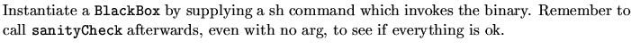
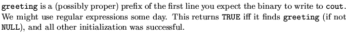
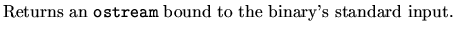
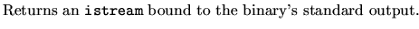

What and Where
The class class BlackBox is defined in magnus/back_end/general/include/BlackBox.h.
A BlackBox is a wrapper for an external binary which communicates exclusively through its standard I/O. The binary must accept some sort of `quit' command from its standard input.
Public Members
BlackBox(const char* command)Constructor

Bool sanityCheck(const char* greeting = NULL)Method

ostream& toCommand( )Method

istream& fromCommand( )Method
